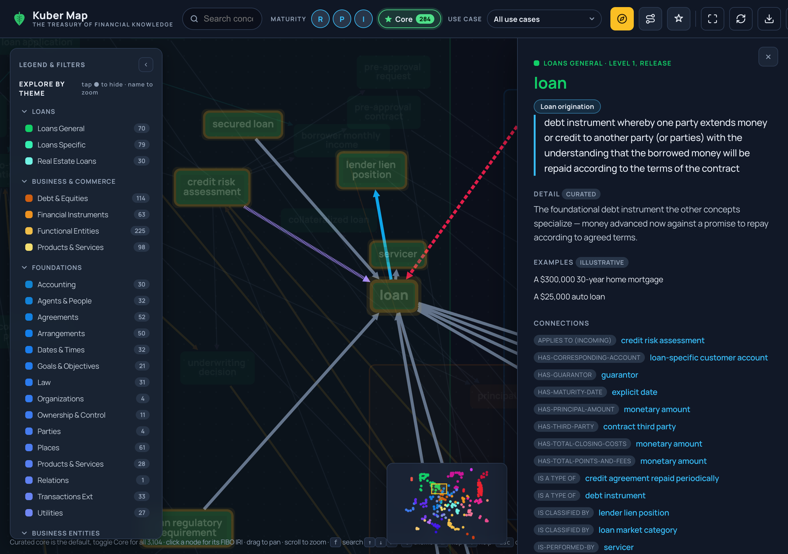

Kuber Map
Why AI keeps failing
the finance audit.
Every FinTech wants AI in production; few can trust it there. It dazzles in the demo and dies in the audit.
An LLM is fluent but not grounded — it describes a mortgage or a beneficial owner approximately, and can't show why it answered.
Kuber Map turns FIBO — the industry's own open standard — into grounding context an agent retrieves and cites.
+45.3pt accuracy · 97% answers cite a real FIBO IRI · 0% hallucinated citations — measured.
Audit-ready AI. It turns "we tried AI" into "we run on it."
Where this guide takes you.
The pattern
Every leap in finance began with a shared language.
The problem
Why AI pilots dazzle, then fail the audit.
The answer
Turn FIBO into grounding an agent can cite.
The proof
Measured: +45pt accuracy, 0% hallucination.
Take it
Open, free — explore, ground, contribute.
By the last page you'll know what to try — and why it works.
The limits of my language mean the limits of my world.
Every leap began with
a shared language.
Double-entry bookkeeping
Luca Pacioli codifies it in print — a shared grammar for value.
SWIFT
One messaging standard, so money moves between institutions.
Legal Entity Identifier
After 2008, the LEI (ISO 17442) gives every entity one global name.
FIBO
The EDM Council models the concepts as one open, machine-readable ontology.
Finance advances when it agrees on a shared, precise vocabulary — FIBO is the latest.
Finance has a new
decision-maker.
Every prior leap gave people and systems a shared vocabulary.
The AI agent is fluent in words, but not grounded in what a mortgage or a beneficial owner is.
The next shared language is for the machines that now reason about money.
The newest actor on the desk needs finance's language more than any human did.
I sat in the rooms.
The verdict was unanimous.
"We tried GenAI. The demo dazzled — then it couldn't go near a regulated decision."
Chief Risk Officer · retail bank
"Honestly? I see noise, not ROI. It sounds confident and gets the details wrong."
CFO · lending fintech
"If it can't show me why it answered, I can't put it in front of a regulator."
Head of Compliance · asset manager
The blocker isn't capability — it's trust you can prove.
Same question. Two outcomes.
The difference isn't the model — it's whether the answer can be traced.
Fluent is not
grounded.
Kuber Map, in one screen.

The same data drives an interactive map and the context packs an agent consumes.
Three rules we don't break.
Teach, don't dump
A hand-picked, learner-first "core" — not the whole ontology firehosed at an expert.
Never blur provenance
Every fact is labeled standard or curated. You always know who is talking.
Audit over hype
Every concept carries its FIBO citation, so an answer is traceable — for a reviewer or a regulator.
Value is measured, not claimed — and the whole thing is open and free.
From open standard
to a cited answer.
Stored once in the Open Knowledge Format (OKF), one data layer feeds both the map and the agent.
The bridges FIBO
leaves unbuilt.
MBS → mortgage (SEC↔LOAN · Reg AB)
reporting party → LEI (FND↔BE · ISO 17442)
credit default swap → bond (DER↔SEC · ISDA)
Grounded vs. not.
The lift held on a stronger model — proof the value is in the grounding, not the model.
The more autonomous the agent,
the less room to be wrong.
Agents chain steps
One wrong semantic early poisons the whole chain.
Cross-domain by nature
Real tasks span loans, securities, entities, reports.
No human in every loop
The citation trail becomes the control.
Trust is the unlock
Institutions deploy what they can prove.
Grounding turns an impressive demo into an audit-ready system.
Five domains, live today.
Adding one is a spec-driven JSON file, no code. Payments, insurance, ESG are next.
Five things worth remembering.
Explore, ground, or contribute.

A curated slice for a real task — one JSON file; the tooling verifies every FIBO id.
A cross-domain link FIBO doesn't draw, with a rationale + citation.
Free, installable, nothing to sign up for — open it in 30 seconds.